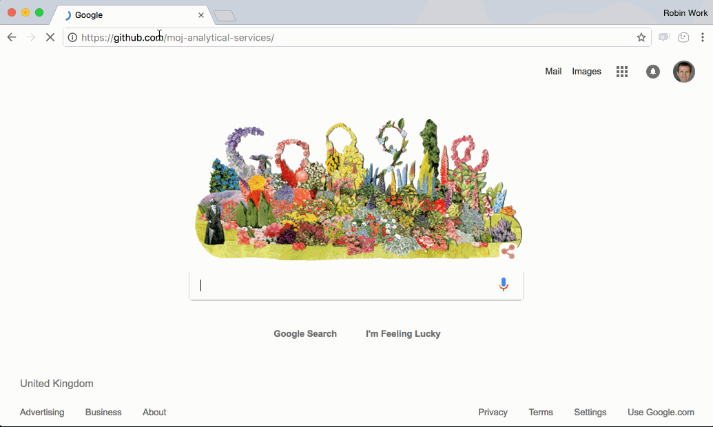
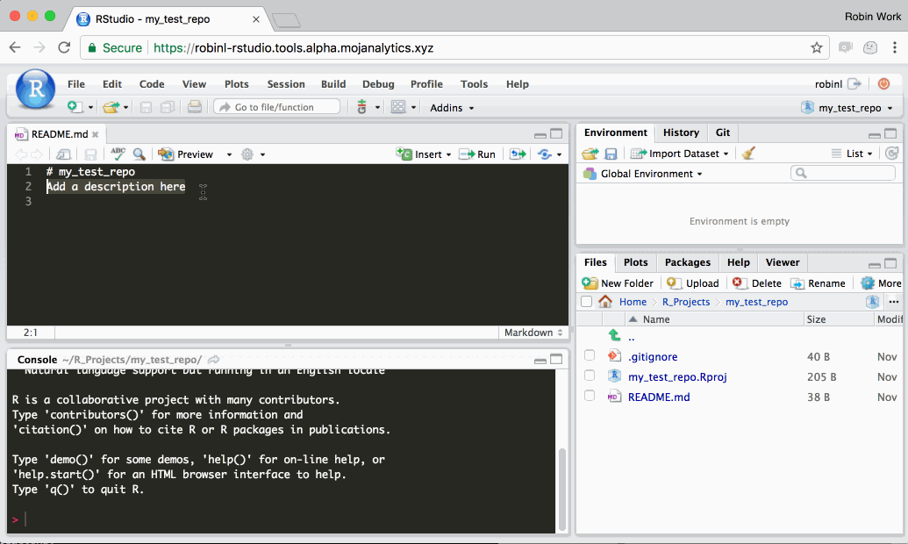
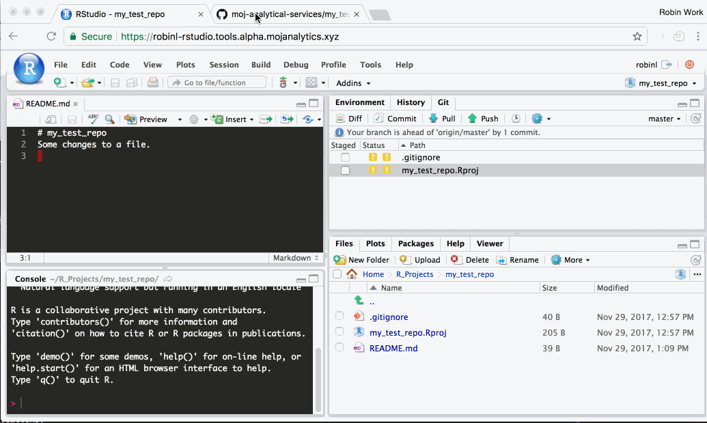
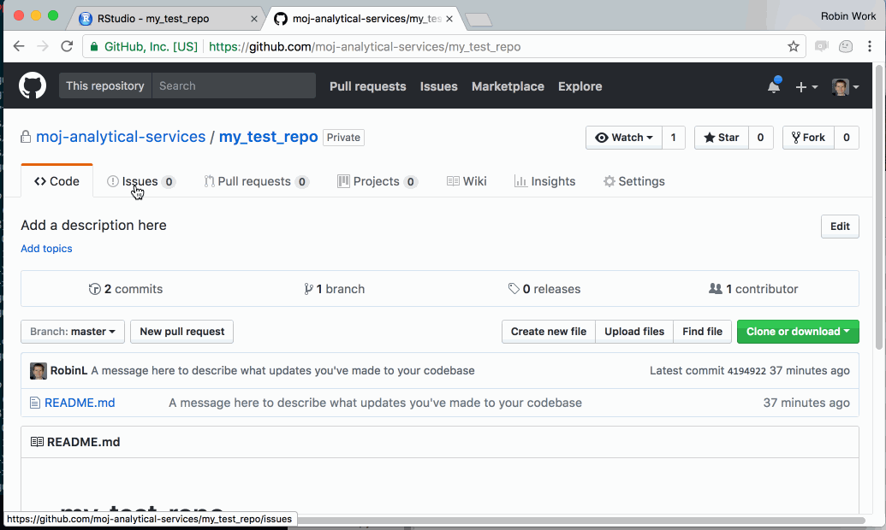
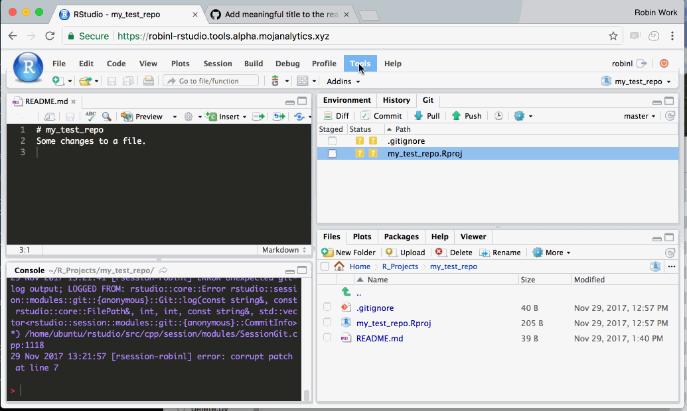
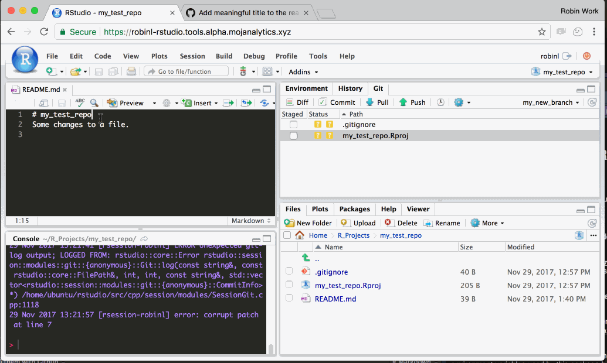
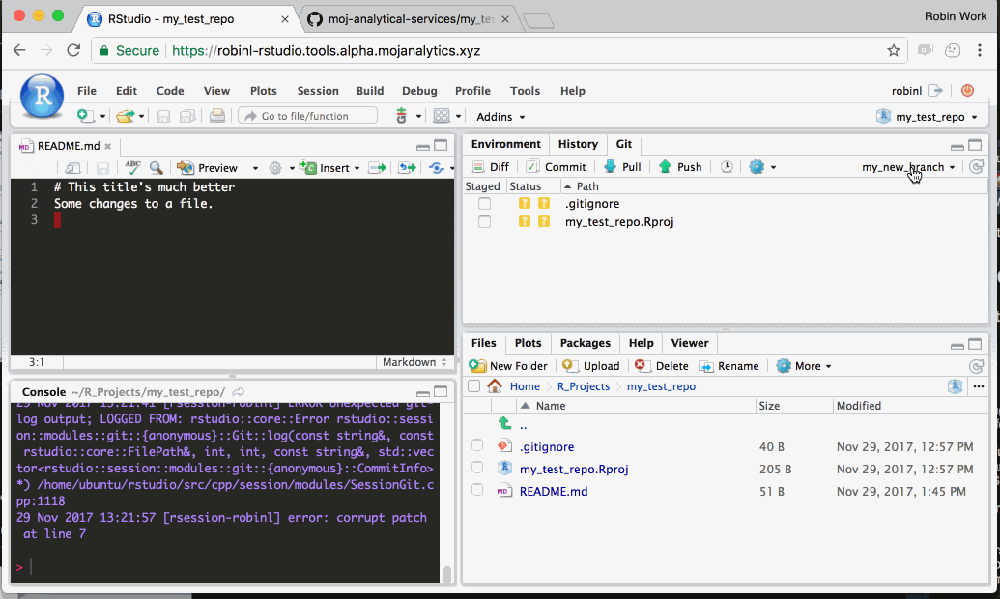
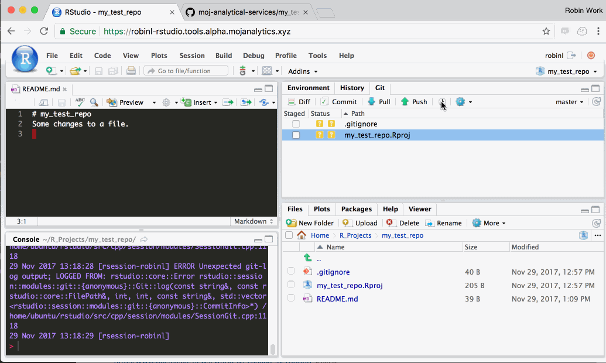

Part 4 Using Github with the platform
Before you can use Github with R Studio or Jupyter, you need to connect them together by creating an ‘ssh key’. Full guidance is here
Github enables you to collaborate with colleagues on code and share you work with them. It puts your code in a centralised, searchable place. It enables easier and more robust approaches to quality assurance, and it enables you to version control your work. More information about the benefits of Github can be found here.
If you are new to Git and Github, it is worth clarifying the difference between Git and Github. Git is the software that looks after the version control of code, whereas Github is the website on which you publish and share your version controlled code. In practice this means you use Git to track versions of your code, and then submit those changes to Github.
This guide provides a step-by-step guide of how to create a GitHub project repo, followed by how to sync with it in R Studio and Jupyter. You can find more in-depth Git training resources here
Note: If any of the animated gifs below do not display correctly, try a different web browser e.g. Microsoft Edge, which is installed on your DOM1 machine.
4.1 Creating your project repo on GitHub
4.1.1 Step 1 - Create a new project repo in the moj-analytical-services Github page
A GitHub ‘repo’ (short for ‘repository’) is conceptually similar to setting up a project folder on the DOM1 shared drive to save your work, and share it with others. The files in this Github repo represent the definitive version of the project. Everyone who works on the project makes contributions to this definitive version from their personal versions.
Note that if you want to contribute to an existing project, you can skip this step.
In your web browser go to github.com and make sure you’re signed in.
Once signed in, go to the MoJ Analytical Services homepage at https://github.com/moj-analytical-services/
Then follow the steps in this gif to create a new repository.

Notes:
Make sure that the repository is set to ‘private’. This is the default setting. If you change this setting to ‘public’, your code will be available on the open internet.
Make sure the owner is set to ‘moj-analytical-services’. This is the default setting, so long as you have clicked on ‘New’ from the https://github.com/moj-analytical-services homepage.
4.2 R Studio
Here’s how you can sync with your new GitHub repo in R Studio.
4.2.2 Step 2: Edit your files, track them using Git, and sync (‘push’) changes to Github
Edit your files as usual using R Studio.
Once you’re happy with your changes, Git enables you to create a ‘commit’. Each git commit creates a snapshot of your personal files on the Platform. You can can always undo changes to your work by reverting back to any of the snapshots. This ‘snapshotting’ ability is why git is a ‘verson control’ system.
In the following gif, we demonstrate changing a single file, staging the changes, and committing them. In reality, each commit would typically include changes to a number of different files, rather than the single file shown in the gif.
Notes:
- ‘committing’ does not sync your changes with github.com. It just creates a snapshot of your personal files in your platform disk.
- Git will only become aware of changes you’ve made after you’ve saved the file as shown in the gif. Unsaved changes are signified when the filename in the code editior tab is red with an asterisk.

4.2.3 Step 3: Sync (‘push’) your work with github.com
In R Studio, click the ‘Push’ button (the green up arrow). This will send any change you have committed to the definitive version of the project on Github. You can then navigate to the project on Github in your web browser and you should see the changes.
Notes:
- After pushing, make sure you refresh the GitHub page in your web browser to see changes.

That’s it! If you’re working on a personal project, and are not collaborating with others, those three basic steps will allow you to apply version control to your work with Github
4.3 Jupyter
There is not the same integration. Use the command-line - see below.
4.4 Command-line
Once you are comfortable using the Terminal (in either R Studio or Jupyter) you can do steps 3 and 4 using the following git commands:
- Select the files that you want to commit:
git add <filename1> <filename2>((This will ‘add’ them to git’s ‘index’ / ‘staging’ area) - ‘Commit’ the files you have added:
git commit. After calling this command, you need to provide a commit message: in R Studio it provides a popup; in Jupyter it’ll start an editor where you write the message, before saving and exiting it. - ‘Push’ your commits to GitHub:
git push origin <branch_name>. Most likely your branch name will bemasterwhich is the default. So your code would begit push origin master.
4.5 Working on a branch.
One of the most useful aspects of git is ‘branching’. This involves a few extra steps, but it enables some really important benefits:
Allows you to separate out work in progress from completed work. This means there is always a single ‘latest’ definitive working version of the code, that everyone agrees is the ‘master copy’.
Enables you and collaborators to work on the same project and files concurrently, resolving conflicts if you edit the same parts of the same files.
Enables you to coordinate work on several new features or bugs at once, keeping track of how the code has changed and why, and whether it’s been quality assured.
Creates intutitive, tagged ‘undo points’ which allow you to revert back to previous version of the project e.g. we may wish to revert to the exact code that was tagged ‘model run 2015Q1’.
We therefore highly recommend using branches. (Up until now, we’ve been working on a single branch called ‘master’.)
4.5.1 Step 1 (optional): Create an Issue in github that describes the piece of work you’re about to do (the purpose of the branch)
Github ‘issues’ are a central place to maintain a ‘to do’ list for a project, and to discuss them with your team. ‘Issues’ can be bug fixes (such as ‘fix divide by zero errors in output tables’), or features (e.g. ‘add a percentage change column to output table’), or anything else you want.
By using issues, you can keep track of who is working on what. If you use issues, you automatically preserve a record of why changes were made to code. So you can see when a line of code was last changed, and which issue it related to, and who wrote it.

4.5.2 Step 2: Create a new branch in R Studio and tell Github about its existence
Create a branch with a name of your choosing. The branch is essentially a label for the segment of work you’re doing. If you’re working on an issue, it often makes sense to name the branch after the issue.
To create a branch, you need to enter the following two commands into the shell:
git checkout -b my_branch_name. Substitutemy_branch_namefor a name of your choosing. This command simultaneously creates the branch and switches to it, so you are immediately working on it.git push -u origin my_branch_name. This tells github.com about the existence of the new branch.

4.5.3 Step 3: Make some changes to address the Github issue, and push (sync) them with Github
Make changes to the code, commit them, and push them to Github.

4.5.4 Step 4: View changes on Github and create pull request
You can now view the changes in Github.
Github recognises that you’ve synced some code on a branch, and asks you whether you want to merge these changes onto the main ‘master’ branch.
You merge the changes using something called a ‘pull request’. A ‘pull request’ is a set of suggested changes to your project. You can merge these changes in yourself, or you can ask another collaborator to review the changes.
One way of using this process is for quality assurance. For instance, a team may agree that each pull request must be reviewed by a second team member before it is merged. The code on the main ‘master’ branch is then considered to be quality assured at all times. Pull requests also allow you and others working on the project to leave comments and feedback about the code. You can also leave comments that reference issues on the issue log (by writing # followed by the issue number). For example you might comment saying “This pull request now fixes issue #102 and completes task #103”.

4.5.5 Step 5: Sync the changes you made on github.com with your local platform
When you merged the pull request, you made changes to your files on Github. Your personal version of the project in your R Studio hasn’t changed, and is unaware of these changes.
The final step is therefore to switch back to the ‘master’ branch in R Studio, and ‘Pull’ the code. ‘Pulling’ makes R Studio check for changes on Github, and update your local files to incorporate any changes.

4.6 Git training Resources
If you are new to git and you want to learn more, we recommend that you complete the basic tutorial available here.
The slides from from the ASD git training are available here (dom1 access only)
- Using Github with R
- Introductory interactive tutorial.
- Quickstart guide and cheatsheet here and in pdf format here.
- More in depth materials:
4.7 Safety barriers
The platform has configured simple “safety barriers” to reduce risk of accidentally exposing sensitive data on GitHub. For example it stops you committing a CSV file, because in most circumstances you should not put data into GitHub - it should be kept in an S3 bucket where it can be shared with authorized people. These rules can be overridden if that makes more sense.
| What | How it’s configured | Reasoning | How to override |
|---|---|---|---|
| Data files (.csv, .xls etc) & zip files | ~/.gitignore | You should not put data into GitHub - it should be kept in an S3 bucket where it can be shared with authorized people. | When you add the file: git add -f <filename> |
| Zip files | ~/.gitignore | It’s better to unpack these files and commit the raw source. You can’t keep track of diffs of individual files if you keep them bundled up. There might be a data file lurking in the zip, which isn’t checked if it is bundled like this. Note: git has its own built in compression methods. | When you add the file: git add -f <filename> |
| Large files (>5 Mb) | ~/.git-templates/hooks/pre-commit | Likely to be data | When you commit: git commit --no-verify |
| Pushing to non-official GitHub organizations | ~/.git-templates/hooks/pre-push | It would be outside MoJ control - not normally allowed. | When you push: git push -f <remote> <branch> |
4.8 Other tips and tricks [Work in progress!]:
4.8.1 Search the code in MoJ Analytical Services to see who else has used a package.
An example of a code search is here. Further guidance is here
4.8.2 Hyperlink to a specific line of code in your project
See here for how to do this.
4.8.3 View who made changes to code, when and why using Git blame.
4.8.4 Make your project available to people on different teams
4.8.5 Assign a reviewer to a pull request, and leave comments.
4.8.6 View how files have changed on the platform and on
